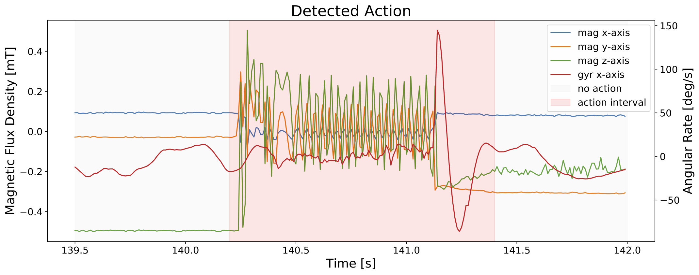
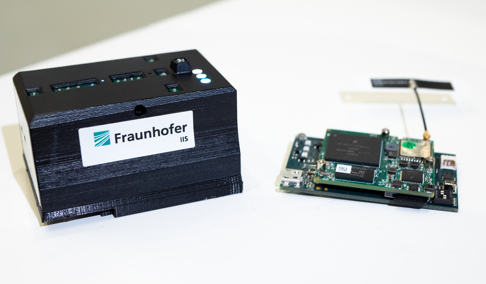

Despite the ongoing automation of modern production processes, manual labor continues to be necessary due to its flexibility and ease of deployment. Automated processes assure quality and traceability, yet manual labor introduces gaps into the quality assurance process. This is not only undesirable but even intolerable in many cases. We introduce a system that monitors the process using inertial, magnetic field and audio sensors that we attach as add-ons to hand-held tools. The sensor data is analyzed via embedded classification algorithms and our system directly provides feedback to workers during the execution of work processes.
Table of Contents
Background
In modern industrial assembly processes, all vitally important tasks are already highly automated and hence provide quality assurance by design. To satisfy strict quality requirements, expensive automation for high quantity production steps is standard. However, for many tasks with lower than vital importance (e.g. fixing faceplates or other embellishments, see figure below) this expensive automation is not worth its cost. Here, highly flexible human labor is much more efficient. Human workers can quickly adapt to new tasks, using different tools, and with relatively cheap initial investment into their instruction. Exactly this human versatility to new tasks and tools is both the strongpoint of manual labor compared to automation, but also its deficit. Humans rarely function perfectly according to a task definition, and thus, the quality of the produced items cannot be guaranteed to a certain standard as it can be assured for an automated assembly. To overcome this quality issue, there are expensive solutions using a four-eye principle of human error detection, i.e., acceptance tests, or even automated camera-based approaches.

© Fraunhofer IIS
In the ideal case we track manual processes that use hand-held (power) tools, e.g., electric screwdrivers, and directly detect whether a task was performed according to its specification. This allows for both manual human labor and automated process quality assurance. Existing smart tools are expensive and limited in their variety. For this to work, the assessment of manual work requires a reliable classification of the performed tasks. However, these processes are often not known in advance. Workers may use wildly different tools (e.g. hammers, electric screw-drivers, etc.) and even configurations of such tools may differ (for instance, electric screwdrivers support stepped motor speeds). The tasks can be as diverse as fixing parts on a stationary workbench, or fixing parts of a car’s underbody in a car assembly line. Finally, the working environment can differ, e.g., a metal hut environment influences the sensors differently from a saw mill.
System Description
We develop the Tool Tracking system (https://www.iis.fraunhofer.de/tooltracking), which uses an ML-based approach to fill the gap in quality assurance. It can be adapted to different tools and work processes, and can hence be used in combination with existing tools. We use inertial sensors, i.e., accelerometers and gyroscopes, a magnetic field sensor, and a microphone to assess the process. Our AutoML pipeline supports all steps starting from data collection for new tasks, over automatic training up to the deployment on the target sensor module
The sensor module is attached to the current hand-held tool via an easily removable fixture that can be used on many tools. If required by a task an optional (optical or radio-based) positioning system can be added to the system. The sensor module and the user interface are wirelessly connected to a back-end server, hosting a containerized service architecture, on top of a database. The worker interacts with our system via a user-interface that runs in a browser, e.g., using a tablet computer.
Dataset Description
The dataset consists of recordings for four different tool types, i.e., an electric screw driver, a pneumatic screw driver, a pneumatic riveting gun and a torque wrench. For each, we record relevant actions using four sensors (gyroscope, accelerometer, magnetic field sensor, microphone) at different sampling frequencies. The characteristics of each tool type’s actions are vastly different, be it in its actions’ durations, the primary excited sensor, the range of detectable classes or the action instance’s segments.

© Fraunhofer IIS
An electric screw driver primarily excites the magnetic field sensor for a variable length of time until finally reaching a torque and full stopping (see figure above), whereas a pneumatic screw driver instead decouples the drive and continues spinning out after reaching the torque. In contrast the pneumatic riveting gun’s actions are only very short bursts without any prelude. Finally, the torque wrench is a manual tool with a lengthy prelude over a slipper mechanism and finished by a clicking spring.

Different tools: riveter, pneumatic screwdriver, electric screwdriver.
© Fraunhofer IIS

Sensor models are placed in a hot-plug rack on the top of the tool.
© Fraunhofer IIS

Sensor modules are off-the-shelf modules.
© Fraunhofer IIS
We record between 30 and 60 minutes of raw data for each tool, containing between 100 and 200 instances of each type of action per tool. Besides the actual tasks, e.g., un-/tightening or riveting, additional events like shaking the tool, setting it down hard, changing nose pieces or manually turning engines are included as anomalies.
Example data statistics for an electric screwdriver: total duration: 52.0 min
| Class | Counts | Mean Duration [s] | Total Duration [s] |
| garbage | 25 | 0.11 | 2.66 |
| undefined | 924 | 2.15 | 1982.71 |
| tightening | 199 | 1.21 | 240.05 |
| untightening | 197 | 0.73 | 143.84 |
| motor_activity_cw | 147 | 1.68 | 246.7 |
| motor_activity_ccw | 145 | 1.75 | 253.85 |
| manual_motor_rotation | 190 | 0.51 | 97.7 |
| shaking | 61 | 1.18 | 72.06 |
| Sensor | Mean Sampling Rate [Hz] |
| Accelerometer and Gyroscope | 102.292 |
| Magnetic field sensor | 154.646 |
| Microphone | nan |
You find the dataset including further descriptions and data loaders in our GitHub repository: https://github.com/mutschcr/tool-tracking
Frequently Asked Questions (FAQ)
No questions so far.